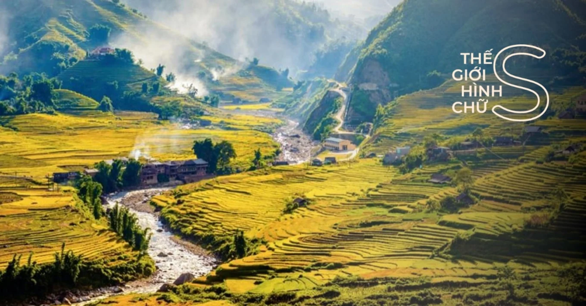
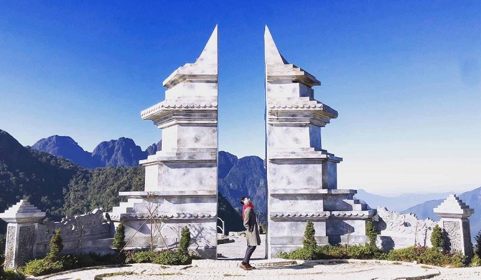

Các địa điểm du lịch Sapa nổi tiếng
Check-in các khu du lịch Sapa dưới đây để có cái nhìn thật khác biệt về phố núi mộng mơ, #teamKlook nhé!
Xứ sở sương mù Sapa vốn là miền đất hứa của bao tín đồ du lịch, nơi có những cảnh đẹp hút hồn, và cả những nụ cười hiền lành của người dân vùng cao. Chắc chắn rằng, ai cũng mong được đến Sapa một lần để một lần được trầm trồ trước khung cảnh thiên nhiên hùng vĩ cùng những trải nghiệm du lịch đa dạng, mới mẻ.
Cuối năm là quãng thời gian Sapa mang vẻ đẹp lãng mạn, bình yên với tiết trời dễ chịu, thiên nhiên và con người hòa như vào nhau. Đừng bỏ lỡ thêm một lần nào nữa, hãy ghi lại ngay 10 khu du lịch hấp dẫn nhất Sapa để làm hành trang cho chuyến đi sắp tới của mình, bạn nhé!
1. Khu Du Lịch Cát Cát Sapa

Nằm dưới chân núi Hoàng Liên Sơn, cách trung tâm thị xã Sapa khoảng 4km, là ngôi làng nhỏ của cộng đồng người H'Mông. Bản Cát Cát là mang vẻ đẹp rất riêng và chưa bao giờ thôi hấp dẫn. Từ những vườn hoa đầy sắc màu bao quanh ngôi nhà trình tường cũ, bên cạnh con đường lát đá, cho đến cả những không gian văn hóa bản làng đậm chất Tây Bắc. Tất cả như hòa quyện vào nhau, tạo nên một bức tranh thiên nhiên sống động.
Ở một nơi hội tụ nhiều “tinh hoa sống ảo” thế này, #teamKlook hãy thuê hẳn bộ trang phục dân tộc để hóa thân thành những cậu trai, cô gái H'Mông, thỏa thích chụp ảnh check-in thoả thích nhé. Giá chỉ khoảng 50.000 - 100.000đ/bộ/ngày thôi.
2. Khu Du Lịch Hàm Rồng Sapa

Đến Sapa mà còn băn khoăn chưa biết nên đi tham quan địa điểm nào trước thì hãy tự chọn núi Hàm Rồng nhé. Hàm Rồng là một ngọn núi thuộc dãy Hoàng Liên Sơn ở thị xã Sapa, đồng thời cũng là khu du lịch sinh thái, địa điểm du lịch nổi tiếng được nhiều người yêu thích.
Với độ cao hơn 1.800m so với mực nước biển, thông thường #teamKlook sẽ dành khoảng nửa ngày để khám phá hết vẻ đẹp của vùng núi này, bao gồm 3 khu vực chính: vườn hoa Hàm Rồng, vườn đá Thạch Lâm, và đỉnh núi Hàm Rồng.
Dọc đường lên đỉnh Hàm Rồng, bạn đi qua những bậc thang bằng đá, xuyên qua những tiểu cảnh như Vườn Lan, Vườn Đào, Trạm viễn thông Sapa, Sân Mây và Cổng Trời, nơi cho bạn cảm giác lâng lâng như đang ở thiên đường.
3. Khu Du Lịch Cầu Kính Sapa

Cầu kính Sapa, hay Cầu đáy kính Rồng Mây, là một công trình được xây gắn chặt vào vách núi đá sa thạch của dãy Hoàng Liên Sơn, ở gần đoạn tiếp giáo Lào Cai và Lai Châu. Cầu kính bắt đầu từ đèo Ô Quy Hồ, ôm sát vách núi Hoàng Liên Sơn ở độ cao 1.000m so với độ cao của núi. Với chiều dài khoảng 300m, và lối đi rộng khoảng 5m với nhô ra từ vách núi đến 50m, Cầu kính Sapa là nơi mang lại những trải nghiệm tuyệt vời nhất, và cũng là cầu kính cao và dài nhất khu vực Đông Nam Á đến thời điểm hiện tại.
Đứng trên Cầu kính Sapa, bạn có thể cảm nhận được độ sâu hun hút bên dưới, hay phóng tầm mắt ra xa để thưởng ngoạn khung cảnh thiên nhiên hùng vĩ, giúp giải toả hết căng thẳng, muộn phiền. Trong những ngày nhiều mây, bạn còn được thử cảm giác đi bộ trên mây không phải nơi đâu cũng có.
Ngoài ra, Khu du lịch Rồng Mây còn tạo điều kiện cho những bạn đam mê thử thách bằng những trò chơi mạo hiểm như: dù lượn, trượt zipline, hay nhảy bungee.
4. Khu Du Lịch Sinh Thái Topas Sapa

Topas Ecolodge nằm trên một ngọn đồi xanh rì hình nón, ẩn sâu trong thung lũng, giữa một bức tranh mây núi mờ ảo đẹp ngỡ ngàng. Đến với Topas Ecolodge Sapa, đa số mọi người thích dành thời gian để khám phá ẩm thực hoặc thư giãn tại một trong những hồ bơi vô cực đẹp nhất Việt Nam.
Hồ bơi nước mặn vô cực chính là điểm nhấn ấn tượng nhất Topas Ecolodge Sapa, thu hút rất nhiều sự chú ý của du khách cũng như truyền thông, và được đánh giá là một trong những hồ bơi vô cực đẹp nhất Việt Nam.
Tại Topas Ecolodge Sapa, các món ăn được chế biến dựa trên nguồn rau củ được thu hái tại các nông hộ trong bản làng, kết hợp với nguyên liệu nhập khẩu, và các loại gia vị đặc trưng của Sapa.
5. Khu Du Lịch Cổng Trời Sapa
Cổng trời Sapa nằm trên đỉnh đèo Ô Quy Hồ - một trong tứ đại đỉnh đèo của Việt Nam nằm ở độ cao 2.035m so với mực nước biển. Nếu đi từ trung tâm thị trấn Sapa du khách sẽ đi theo lối quốc lộ 4D đường đi Lai Châu, trong đó sẽ đi qua Thác Bạc, Trạm Tôn, Thác Tình Yêu là sẽ tới với Cổng trời Sapa. Ngay từ khi bắt đầu của con đèo Ô Quy Hồ nếu các bạn di chuyển bằng xe máy sẽ cảm nhận ngay những đoạn cua khúc khuỷu, đề nghị những bạn nào có tay lái chắc khỏe hãy vượt đường đèo này thật cẩn thận và lựa chọn những chiếc xe máy có dộ an toàn cao nhé!
Trên hành trình đi bạn sẽ có cơ hội chiêm ngưỡng toàn bộ phong cảnh hai bên đường vô cùng ấn tượng. Bỏ lại sau lưng là thị trấn Sapa với những ồn ào náo nhiệt bạn sẽ đến với khung cảnh ngoạn mục của đồi núi, của đất trời hòa quện vào với nhau. Cảm giác phượt bằng xe máy với con đường đèo dài nhất Việt Nam sẽ là một kỉ niệm đáng nhớ.
Từ Cổng trời Sapa du khách sẽ cảm nhận được vẻ đẹp kiêu hùng của đỉnh Fansipan vời vợi lưng trời. Bên dưới là những vực sâu thăm thẳm được bao phủ bởi những rặng nguyên sinh chứa đựng trong nó bao nhiêu điều bí ẩn. Những du khách đến tham quan Thác Bạc tại Sapa thường sẽ đi cố thêm một đoạn đường nữa để có cơ hội chiêm ngưỡng Cổng trời Sapa ngắm nhìn những thưở ruộng bậc thang nơi rẻo cao vùng Tây Bắc. Những nét đẹp nơi này còn vô tình được tạo nên bởi sự tổng hòa bản sắc của các dân tộc anh em người H'Mông, dao, Giáy,…bức tranh Tây Bắc lại càng trở nên sống động hơn bao giờ hết.